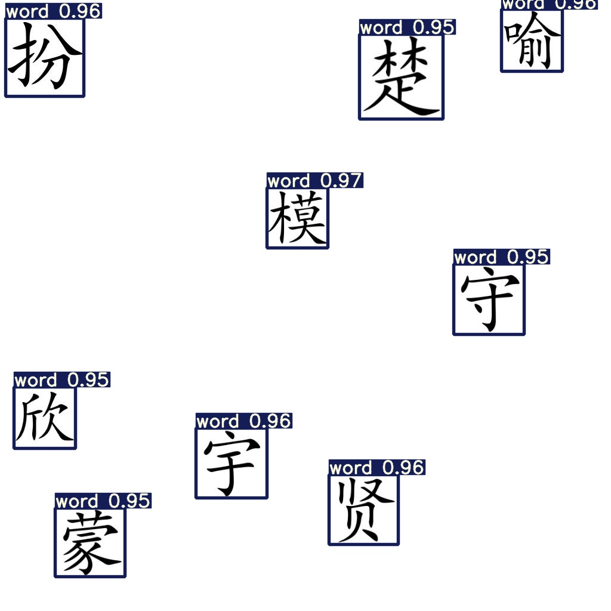
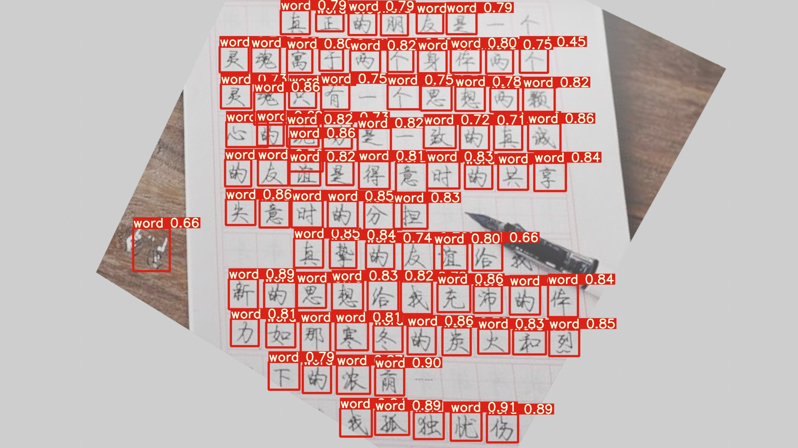

:)
1. 目标
将字帖上的每个字单独框选出来
2. 数据集
yolov5推荐了coco128（链接）
2.1. 数据集格式
2.1.1. yaml文件
数据集通过yaml文件帮助模型定位数据，格式如下
1 | # 下载链接 (可选) |
因为coco128很小，只有128张图片，所以将训练集与测试集设置为一个。一般情况下，上述两个路径应当分别指向训练集与数据集。值得注意的是，相对路径应当设置为执行脚本与数据集之间的相对路径。
2.1.2. 样本与标签
每一个样本都是一个jpeg格式的图片，每一个标签都是一个txt文件。样本名称与标签名称一一对应，比如00001.jpg对应于00001.txt。倘若图像中符合所规定的类的物体有多个，则对应的标签也有多行。
标签的每一行的格式如下
1 | <类别 id> <正规化的边界框中心的x坐标> <正规化的边界框中心的y坐标> <正规化的图像宽度> <正规化的图像高度> |

2.1.3. 目录结构
注意到在之前的yaml文件中，train与val都只是指明了图像的路径，这是因为YOLOv5会自动将图像路径中最后一个images字段替换为labels来定位标签。比如
1 | coco/images/train2017/000000109622.jpg # image |
所以图像样本与标签的路径应当统一。假设数据集与YOLO目录平行处于同一个目录下，则下面给出了一个目录结构的例子
1 | . |
2.2. 数据集准备
字库为包含3755个常用汉字的一级字库，字体为楷体simka.ttf。通过执行脚本生成样本。
| 白底黑字+随机位置+随机小尺寸缩放 | 字帖背景黑字+规范位置+随机小尺寸缩放 | 字帖背景黑字+随机位置+随机小尺寸缩放 |
|---|---|---|
| 白底单黑字 | 字帖背景黑单字 |
|---|---|
按照yaml文件的格式，编写words.yaml：
1 | train: ../words/train/images/ |
放在哪里没有强制要求，在训练时需要指定这个文件的路径即可
生成数据，并按上述路径放好：
1 | . |
2.3. 数据集生成所用脚本部分代码说明
一些版本号:
| 项 | 版本 |
|---|---|
| win10 | 1909 |
| python | 3.7.3 |
| tensorflow | 2.1.0 |
| torch | 1.7.1+cu110 |
| Pillow | 7.0.0 |
| opencv-python | 4.2.0.32 |
| numpy | 1.19.5 |
所用的字库为包含了3755个常用汉字的一级字库
2.3.1. 配置和工具说明
1 | # ch_list存储字库 |
1 | # 获取单张楷体字，白底黑字 |
2.3.2. 白底黑字+随机位置+随机小尺寸缩放
1 | def get_sample(to_rgb=False): |
2.3.3. 字帖背景黑字+规范位置+随机小尺寸缩放
1 | def get_regular_sample(): |
2.3.4. 字帖背景黑字+随机位置+随机小尺寸缩放
1 | def get_sample_with_bg(): |
2.3.5. 白底单黑字和字帖背景黑单字
通过截取白底和字帖背景规范位置样本中的单字完成
1 | # 随机取出大样本 |
2.3.6. 随机样本
1 | def get_random_sample(): |
3. 训练
在开始训练之前，需要将yolov5/models/yolov5s.yaml中的nc: 80更改为nc: 1
1 | # parameters |
执行训练脚本
1 | python train.py --batch 12 --epochs 20 --data ../words/words.yaml --weights yolov5s.pt --nosave --cache |
训练完成之后会提示所保存的模型位置，可以使用脚本测试
1 | python detect.py --weights runs/train/exp/weights/last.pt --img 640 --conf 0.25 --source ../words/val/images/ |
4. 结果
在4000张数据下，20个epoch的结果：
| 字帖背景 | 无背景 | 单个字的边界框恰好在边缘 |
|---|---|---|
|  |

可以使用--iou <阈值>来缓解
1 | python detect.py --weights runs/train/exp/weights/last.pt --img 640 --conf 0.25 --source ../words/val/images/ --iou 0.1 |